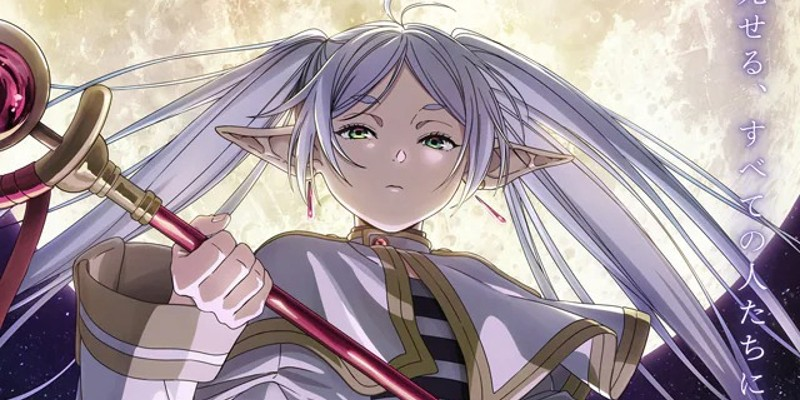

INICIO
NOTICIAS
FOTOS
ZONA MULTIMEDIA
SUGERENCIAS
NOTICIAS
ESTRENOS ANIME OTOÑO 2024: Estos son los estrenos de la actual temporada de otoño de 2024

FRIEREN TEMPORADA 2: Confirmada la segunda temporada del anime de Frieren a cargo del estudio Madhouse
MAJIN BOO SE VUELVE PRIMER MINISTRO EN JAPON: Es elegido como presidente un politico que dio un discurso disfrazado como Manjin Boo
PUNTO Y FINAL PARA JUJUTSU KAISEN: No habra secuela tras el final del manga de Jujutsu Kaisen
NUEVO AVANCE DE WALPURGISNACHT RISSING: Nuevo avance de la cuarta pelicula de Madoka Magica a estrenarse en 2025